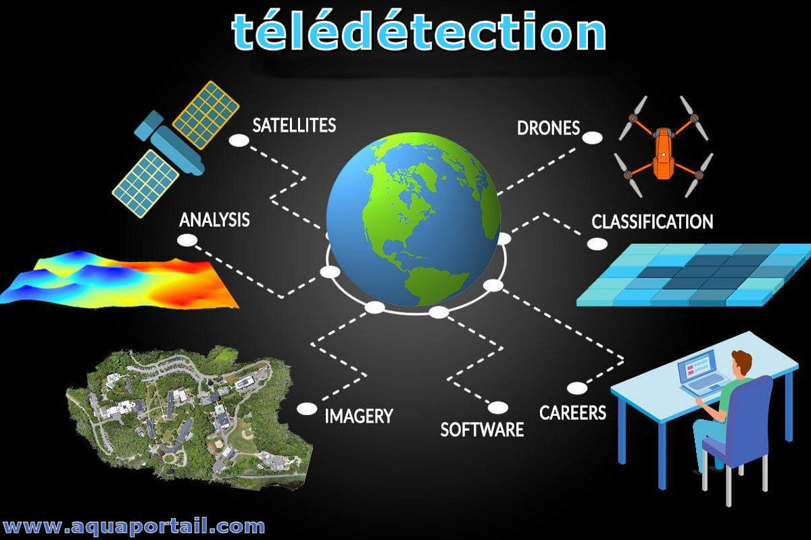

A propos de moi
Je suis étudiant en Master 2 Géomatique et Modélisation Spatiale à Aix-Marseille Université. Formé à l’analyse spatiale, au traitement de données géographiques et à la cartographie d’aide à la décision, je travaille sur des projets territoriaux et environnementaux à partir de données multi-sources. J’utilise les outils SIG, la programmation Python et des solutions Web-SIG pour produire des cartes, des indicateurs et des analyses destinées à des usages opérationnels. Mon objectif est de transformer des données complexes en supports clairs, utiles et exploitables pour l’aménagement et la gestion des territoires.
Découvrez mes compétences

Automatisation SIG et géotraitement
Je conçois des scripts et des workflows pour automatiser les traitements SIG et fiabiliser la production.
L’objectif est double : fiabiliser les résultats et réduire fortement le temps de production, notamment dans des contextes d’analyse territoriale ou environnementale.
Je porte une attention particulière à la reproductibilité des traitements, à la traçabilité des données et à la clarté des scripts. Outils mobilisés : Python (GeoPandas, Pandas), PostGIS, traitements batch, QGIS.
Analyse spatiale et diagnostics territoriaux
Analyses spatiales avancées pour caractériser des dynamiques territoriales et produire des diagnostics utiles à la décision.
Ces analyses mobilisent l’analyse multicritère, la statistique spatiale et la lecture croisée de phénomènes (environnement, risques, socio-économie, urbanisme). L’objectif est de sortir des résultats lisibles et défendables, pas juste des cartes “jolies”.
Je veille à expliciter les hypothèses, les limites et les choix méthodologiques afin de garder une analyse solide. Outils : QGIS, ArcGIS Pro, Python, bases de données spatiales.

Télédétection et dynamiques environnementales
Exploitation d’images satellites pour analyser la végétation, les feux, les îlots de chaleur et les changements dans le temps.
Je travaille sur des images optiques et thermiques (Sentinel, Landsat) pour calculer et interpréter des indices (NDVI, NDBI, LST, etc.), construire des séries temporelles et détecter des évolutions significatives.
Une attention particulière est portée à la qualité des données (nuages, périodes, cohérence) et à la cohérence entre résultats et contexte terrain. Données et outils : Sentinel, Landsat, Google Earth Engine, Python.
WebSIG, DataWebSIG et visualisation
Conception d’applications cartographiques et de tableaux de bord pour rendre les données spatiales accessibles et exploitables.
Je développe des interfaces orientées utilisateur : cartes interactives, filtres, légendes dynamiques, couches thématiques, indicateurs et visualisations. Le but est de transformer une analyse en outil utilisable.
Je travaille aussi sur la structuration des données (formats, cohérence, organisation) pour faciliter la mise à jour et l’évolution du projet. Technologies : Leaflet, Django, SQL, WebSIG, dashboards.
Mes cartes réalisées
Vignettes + aperçu + téléchargement.
Mes documents
Rapports, mémoires et productions SIG, consultables et téléchargeables.
Contact
Une question, un projet, un stage ? Je réponds rapidement.